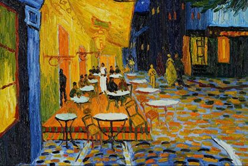

La Noche Estrellada
La noche estrellada (en neerlandés De sterrennacht) es la obra maestra del pintor postimpresionista Vincent Van Gogh. El cuadro lo realizó en el sanatorio de Saint-Rémy-de-Provence, donde se recluyó hacia el final de su vida, a mediados de 1889, trece meses antes de su muerte. Van Gogh usó óleo humedecido y pinceles finos para realizar la obra.
Desde 1941 forma parte de la colección permanente del Museo de Arte Moderno de Nueva York. Considerado el magnum opus de van Gogh, el cuadro ha sido reproducido en numerosas ocasiones y es conocido como una de las pinturas más famosas de la historia.
Aunque La noche estrellada se pintó durante el día en el estudio de la planta baja de Van Gogh, sería inexacto afirmar que el cuadro se pintó de memoria. La vista ha sido identificada como la de la ventana de su dormitorio, orientada al este, una vista en la que Van Gogh pintó variaciones de no menos de veintiuna veces, [cita requerida] incluyendo La noche estrellada . "A través de la ventana con barrotes de hierro", le escribió a su hermano, Theo, alrededor del 23 de mayo de 1889, "puedo ver un cuadrado de trigo cerrado ... sobre el cual, por la mañana, veo salir el sol en todo su esplendor. . "
Van Gogh representó la vista en diferentes momentos del día y bajo diversas condiciones climáticas, incluido el amanecer, la salida de la luna, los días llenos de sol, los días nublados, los días ventosos y un día con lluvia. Si bien el personal del hospital no permitió que Van Gogh pintara en su dormitorio, allí pudo hacer bocetos en tinta o carboncillo sobre papel; eventualmente, basaría variaciones más nuevas en versiones anteriores. El elemento pictórico que une todas estas pinturas es la línea diagonal procedente de la derecha que representa las colinas bajas y onduladas de las montañas Alpilles . En quince de las veintiuna versiones, los cipreses son visibles más allá de la pared del fondo que encierra el campo de trigo. Van Gogh amplió la vista en seis de estas pinturas, sobre todo en F717 Campo de trigo con cipreses y La noche estrellada, que acercan los árboles al plano de la imagen .
Terraza de Café por la Mañana

En 1888, Vincen van Gogh pintó la terraza del café en la noche, durante su estadía en Arles. Un óleo sobre lienzo, de 81 x 65 cm. Ahora parte de la colección del museo de Kröller-Müller. A ésta obra también se le conoce como Café Terrace on the Place du Forum, Café en la noche o simplemente café de noche. Van Gogh escribió sobre pintar ésta obra a su hermana menor Willemien; en la carta describe algunas ideas que tuvo mientras pintaba. Se describe que comparó la escena con el principio del libro Bel-Ami por Guy de Maupassant.
Bien se sabe que van Gogh disfrutaba caminar a los lugares que quería pintar. Y ésta no fue la excepción. Describe en una carta “Disfruté enormemente pintar el lugar de noche. En el pasado la gente solía dibujar de noche y después pintar de día. Pero a mi me gusta pintar las cosas al momento. Es cierto que se necesita un azul para los verdes en la oscuridad, un lila para pintar el rosado, ya que no se pueden hacer los tonos de la naturaleza con tal claridad.